In-loop
You are at the device, exploring and steering. Keep experimentation, unfamiliar territory, and very hard specific problems here.
human ↔ agent ↔ tools
Stop being the courier between prompts. Assemble prompt input, trigger, environment, and review around reusable workflows so chores, bugs, and features can become pull requests while you are away.
Mastery promise. By the end, you will be able to map any AFK system with PITER, trace a real ADW from issue to pull request, explain how deterministic code safely chains non-deterministic agents, diagnose a run from its artifacts, and improve the system that produced a bad result.
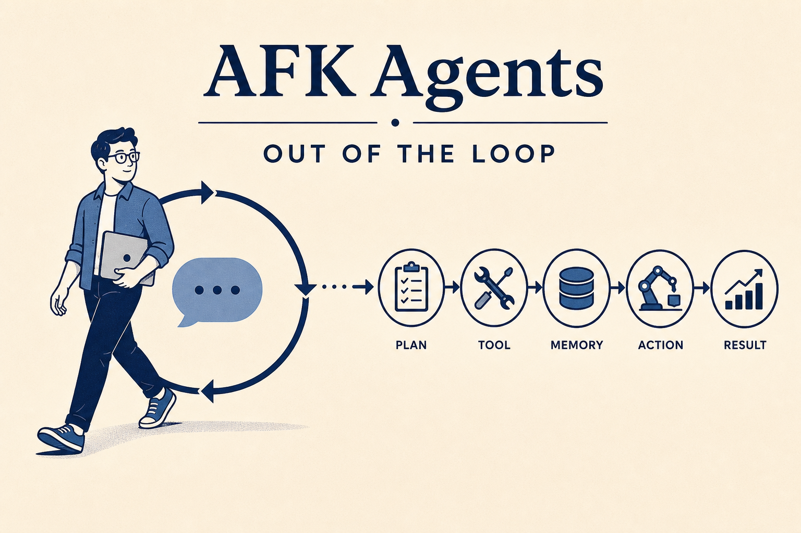
TAC-1 asked you to stop hand-typing application code. TAC-3 taught you to turn repeatable judgment into templates. TAC-4 composes those gains: if the template is reusable and the agent can be called from code, why must you sit at the keyboard and carry every prompt into the next prompt?
An in-loop agent can already feel miraculous. You state a task, watch it read files, answer a question, intervene, redirect, approve a command, and ask for a final repair. But notice the hidden job: you are still the scheduler, router, state carrier, and status page. Your attention is the process manager. The system may type and reason, yet it waits for your presence at every transition.
This chapter changes the unit of delegation. A GitHub issue becomes the prompt input. A webhook, cron process, or manual command becomes the trigger. A dedicated checkout becomes the environment. A pull request and issue feed become the review surface. Between them, an AI Developer Workflow fetches, classifies, branches, plans, commits, implements, commits again, and opens the pull request. You are not removed from engineering. You move to the two places where your judgment is most valuable: defining the work and reviewing the evidence.
The source of truth is the course repository at tac/tac-4. The central file is adws/adw_plan_build.py, a 536-line uv script. It surrounds an untouched application with an agentic layer: nine ADW files, thirteen command templates, five hook events, scripts, specifications, logs, and run artifacts. The video demonstrates two real runs. Issue #31 becomes PR #32, a documentation chore completed in roughly five minutes. Issue #33 becomes PR #34, a JSONL-upload feature completed in roughly seventeen minutes. Those durations are observations from this codebase, not promises.
The demo is intentionally imperfect. The documentation pull request expands ADW incorrectly as “Agentic Developer Workflow” and describes plausible files that do not exist. The shipped adws/README.md contains more agent-flavored inaccuracies. The feature run begins with a wrong-path Failed to spawn. These are not blemishes to hide. They teach the two disciplines an AFK system needs most: visible evidence and system-level repair.
Safety boundary
The course’s template runner uses --dangerously-skip-permissions. Its safety argument depends on the environment being a checkout you can afford to lose, without production credentials. The flag is not made safe by model intelligence. The environment is the permission boundary.
AFK does not mean “autonomy everywhere.” It means that a growing class of engineering work can move from prompt to review without consuming your continuous presence.
1 · Hook — concrete failure
You give an agent a chore. It asks where the file lives. You answer. It drafts a plan. You say continue. It edits. You remind it to run tests. It finds a failure and asks what to do. You point at the obvious fix. It commits only after you request a commit. At the end, the agent has performed most keystrokes, but your attention has been fragmented for thirty minutes. The workflow is intelligent and still tethered.
Presence is a real cost even when each intervention is brief. A three-second approval prevents you from trusting the next thirty minutes to the system. The result is a peculiar form of automation: faster execution wrapped in constant supervision.
2 · Picture — the routing rule
You are at the device, exploring and steering. Keep experimentation, unfamiliar territory, and very hard specific problems here.
human ↔ agent ↔ tools
You provide the request, leave the execution loop, then review a concrete result. Route increasingly repeatable chores, bugs, and features here.
prompt → workflow → pull request
3 · Story — one feature without the courier
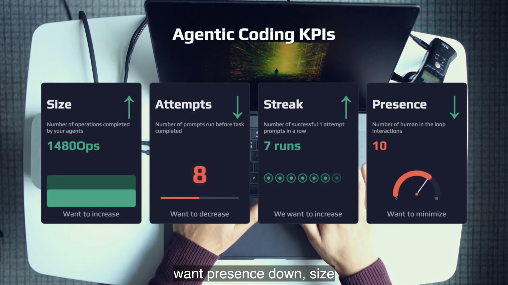
Dan creates a feature issue asking for JSONL upload support. It includes constraints: scan the entire file for possible fields, use only the standard library, create one table per file, flatten nested values with __, use _0 for list indexes, store the delimiter in a constants file, update the interface, and add fixtures. Then the ADW runs. Dan does not translate the issue into a plan or relay the plan into an implementer. The system does.
Roughly seventeen minutes later the pull request exists. The committed plan is about 170 lines. The app accepts a JSONL fixture and produces columns such as profile__location and profile__skills_0. The significant fact is not that a model wrote a parser. It is that no engineer needed to carry the feature between the issue, planner, implementer, commits, and review surface.
4 · Name it
“Out-loop” describes the position of the human during execution, not the absence of human judgment. The engineer still defines constraints, owns the pipeline, and reviews the result. Staying out of the execution loop is compatible with a strong review gate.
5 · Worked example — make a routing decision
A documentation chore in a known directory is a strong first out-loop candidate: the desired artifact is legible, the repository supplies evidence, and a pull request makes mistakes reversible. An architectural experiment in a new domain stays in-loop because the goal is discovery. A JSONL feature can move out-loop after its constraints and verification path are explicit. A subtle production incident remains in-loop because the blast radius and unknowns dominate.
The rule is not “small equals out-loop.” It is “clear problem class, bounded environment, inspectable evidence, and tolerable failure cost.” Issue #33 is larger than issue #31, but its constraints and tests make it routable.
6 · You try — five-minute routing drill
7 · Common fail + fix
Everything out-loop: one genuinely hard problem produces a poor pull request, and the team concludes the system cannot be trusted. Nothing out-loop: the team waits for perfect autonomy and never collects the runs needed to improve templates.
Fix: use the trust ladder. Start with chores, record evidence, upgrade the system after failures, then move to bugs and constrained features. Keep exploration in-loop without apologizing for it.
8 · Current practice
9 · Retrieval
Define out-loop agentic coding in one phrase.
Off-device agentic coding: request in, you leave the execution loop, reviewable result back.
Which three kinds of work does Dan keep in-loop?
Experimentation, exploration of new territory, and very hard, very specific problems.
10 · Teach-back
Teach a colleague why AFK moves presence down without removing review. Use issue #33 as evidence and name one task that should remain in-loop.
Generic agents can be excellent. The system that encodes how your codebase plans, validates, commits, and reports is still too valuable to leave generic.
1 · Hook
A hosted agent can read the repository and produce a plausible change. But it cannot infer a rule that exists only in your team’s habits: standard library only, nested keys joined by __, list elements written with _0, delimiter stored centrally, fixtures in a particular test directory, a specific test command, and a pull-request body that links the plan and tracking ID. If those rules are not encoded, every reviewer becomes a translator.
2 · Picture
chore · bug · featureplan · implement · commit · PRsequence · validate · report · stoplocal · dedicated device · hosted agent3 · Story
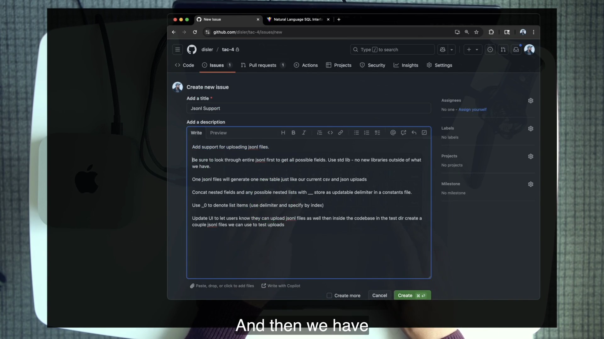
The issue is neither a vague wish nor a hand-written implementation plan. It states desired behavior and non-negotiable constraints. The pipeline contributes the repository reading, plan format, implementation method, tests, commit contract, and PR structure. That division is why the same high-level prompt can produce work shaped for this codebase rather than a generic patch.
4 · Name it
This is not a command to avoid cloud tools. It is a command to preserve control over the encoded work path. You can run your pipeline on a local CLI today and another surface later without surrendering the system design.
5 · Worked example
What outcome and constraints matter?
Support JSONL; scan all fields; standard library only; flatten nested values; update UI; add fixtures.
How does this repo deliver work?
Classify; create a branch; write a plan in specs/; commit; implement; test; commit; open a structured PR.
If a future agent host changes, the left and right responsibilities should still be legible. That is portability at the workflow level.
6 · You try
tac/tac-4/.claude/commands/feature.md.7 · Common fail + fix
Symptom: you believe owning the pipeline means operating every server yourself, or you reject useful hosted agents on principle. Fix: own the specifications, contracts, artifacts, and evaluation path. Hosting is one PITER choice. Pipeline semantics are the durable asset.
8 · Current practice
9 · Retrieval
Why do generic coding agents have natural limits for a differentiated codebase?
They are designed for many codebases and do not automatically carry your templates, standards, problem classes, and review practices.
What can be rented without surrendering the pipeline?
The execution surface or hosting. You still own the workflow semantics, prompts, contracts, evidence, and review policy.
10 · Teach-back
Explain in two minutes why “own your pipeline” does not mean “never use a hosted agent.” Use one JSONL constraint and one repository template as evidence.
Tools are replaceable. The four roles are not. PITER is the map that lets you recognize the same architecture behind a GitHub webhook, a cron job, a phone-created issue, or a manual launch.
1 · Hook
No prompt input means the system has no work. No trigger means a human must start every run. No isolated environment means the agent competes with your active checkout and credentials. No review means output can exist without trust. A tool demo can look autonomous while quietly missing one of these roles.
2 · Picture
The request, outcome, and constraints.
GitHub issueThe event that starts the run.
webhook · cron · manualThe bounded place with tools and credentials.
dedicated Mac mini / checkoutThe evidence and decision surface.
issue feed · plan · PR3 · Story
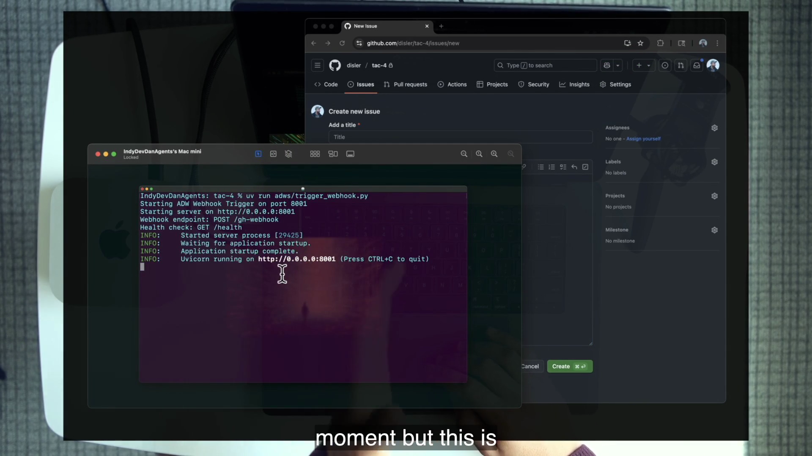
trigger_webhook.py listens on port 8001 in the dedicated Mac mini while GitHub supplies the request surface.Prompt input is issue #31. The webhook fires when an issue opens or when an issue comment is exactly adw. To answer GitHub quickly, the webhook launches the workflow in a background process rather than holding the request open. The environment is Dan’s dedicated Mac mini, reached through a tunnel. Review is PR #32 plus the issue-comment live feed. Demo 2 later swaps the trigger to a manual command and the environment to the local device while leaving prompt input and review intact.
4 · Name it
5 · Worked example
| Element | Webhook demo | Manual demo | Changed? |
|---|---|---|---|
| Prompt input | GitHub issue #31 | GitHub issue #33 | Same kind of surface |
| Trigger | GitHub webhook | uv run adws/adw_plan_build.py 33 | Yes |
| Environment | Dedicated Mac mini | Local course checkout | Yes |
| Review | Issue feed + PR #32 | Issue feed + PR #34 | Same kind of surface |
If your architecture cannot survive this substitution, you probably encoded product names instead of system roles.
6 · You try
If any line is blank, you found the missing system role—not a reason to buy Dan’s hardware.
7 · Common fail + fix
Symptom: the student copies a Mac mini, Cloudflare tunnel, and GitHub webhook without being able to explain why each exists. Or they stall because their team uses Jira. Fix: state the role first, then choose the cheapest tool that satisfies it. Also shut down listeners when the drill ends: every qualifying issue can start a token-consuming run.
8 · Current practice
9 · Retrieval
Expand PITER and give the course tool for each element.
Prompt input—GitHub issue; Trigger—webhook, cron, or manual command; Environment—dedicated Mac mini or bounded checkout; Review—issue feed, plan, and pull request.
Which two elements change between Dan’s first and second demos?
Trigger and environment.
10 · Teach-back
Explain PITER to someone using no product names. Then map it once to the course and once to your own stack.
PITER explains the perimeter. The AI Developer Workflow is the machinery inside it: deterministic code sequencing reusable templates and fresh agents until one issue becomes a pull request.
1 · Hook
You could paste the entire request into one enormous prompt: classify this issue, create a branch, plan the change, implement it, test it, commit everything, and open a pull request. The model might succeed once. But when it fails halfway, which phase failed? Which prompt should improve? Which expensive reasoning step deserved a stronger model? Where should deterministic code stop the run? A single conversation hides the workflow inside one stochastic event.
2 · Picture
GitHub issueclass + id + slugspecs/*.md + commitimplement + test + commitstructured PR3 · Story
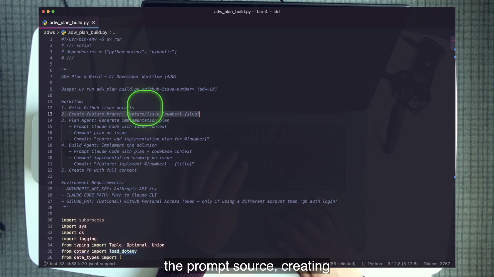
adws/adw_plan_build.py accepts an issue number and optionally an existing ADW ID. It creates a logger, posts a start message, fetches issue details, asks a classifier which planning template applies, asks another agent to create a branch, runs the planner, finds the created plan, commits it, runs the implementer with the plan path, commits the implementation, and creates the pull request. After each meaningful step, deterministic code checks the response and reports progress to the issue.
The script is a uv single-file program. Dan’s point is not Python. It could be shell, Bun, or another host language. The point is that ordinary code now contains calls to non-deterministic judgment as normal workflow steps.
4 · Name it
The name preserves the hybrid nature of the unit. Deterministic code handles ordering, validation, error exits, logging, and status. Prompts define the job interface. Agents perform the steps that require interpretation and judgment. The composition is stronger than either part alone.
5 · Worked example
/chore; the branch becomes chore-31-5615f7c8-document-adw-directory.specs/adw-documentation-plan.md; a committer creates the planner commit.5615f7c8, and closes issue #31.The workflow finished in roughly five minutes in the recording. The bad claims in its PR do not negate the architecture; they identify which templates and review checks need improvement.
6 · You try
tac/tac-4/adws/adw_plan_build.py.main flow.You pass when the script reads like a workflow rather than a wall of Python.
7 · Common fail + fix
Too monolithic: one giant prompt erases contracts and observability. Too meta: the team builds an orchestration framework before proving one workflow. Fix: keep one legible script with explicit steps. Extract a framework only after several real ADWs reveal the same repeated shape.
8 · Current practice
9 · Retrieval
Define an ADW.
A reusable agentic workflow combining code, agentic prompts, and agents to deliver results autonomously.
What are the five stages of adw_plan_build.py?
Fetch issue, create branch, plan and commit, implement and commit, create pull request.
10 · Teach-back
Use the five stages to explain where deterministic code, prompts, and agents each contribute. Name one failure a mega-prompt would hide.
The out-loop machinery belongs around the application, not inside it. That separation keeps the delivery system improvable and the product unaware of its operator.
1 · Hook
Imagine application code importing the workflow that edits it, or an ADW calling internal application functions directly because they are convenient. Now the agentic system and the product share runtime assumptions. You cannot ship the app without orchestration baggage, and you cannot move the workflow to another repository without untangling product dependencies. The operator has leaked into the operated system.
2 · Picture
.claude/commands/ + adws/templates, sequencing, agents, telemetry3 · Story
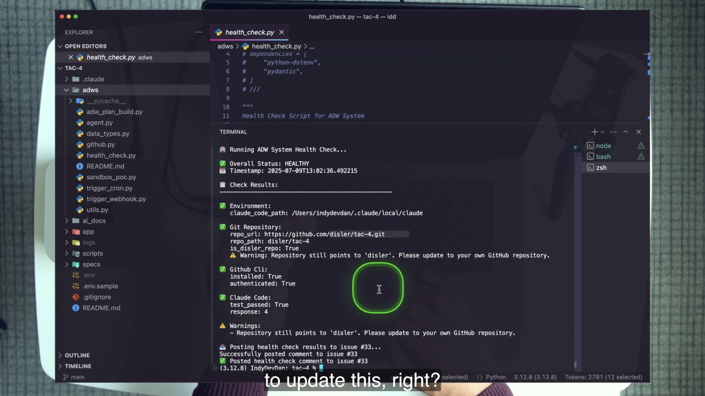
adws/, .claude/, specs/, ai_docs/, scripts/, and logs surround app/.Dan calls out that app/ is untouched by the infrastructure around it. The two essential directories are .claude/commands/, where reusable prompt templates live, and adws/, where compositional workflows live. Supporting directories supply concrete assets: specs/ holds plan artifacts, ai_docs/ holds documentation agents can read, scripts/ supplies operational commands, and runtime directories hold run evidence.
4 · Name it
5 · Worked example
.claude/commands/Thirteen reusable prompt interfaces: classify, branch, plan by issue class, find plan, implement, commit, pull request, install, and related operations.
adws/Nine committed workflow files for the plan/build pipeline, agent wrapper, GitHub operations, triggers, health checks, types, and utilities.
specs/Committed plans. A plan becomes both the implementer’s prompt and an improvable record of planner behavior.
ai_docs/Pinned reference material for tools and providers so the agent can consult repository-local documentation.
scripts/Start, stop, reset, tunnel, comment cleanup, and PR cleanup operations used in demos and labs.
app/The product. It can be built and shipped without knowing the agentic layer exists.
6 · You try
app/ while app/ must not depend on the workflow.7 · Common fail + fix
Symptom: ADW utilities become an application library, or the app gains endpoints solely to satisfy the coding agent. Fix: let the layer act through the same repository and operational surfaces a human engineer uses: files, tests, Git, and review. Keep product behavior independently deployable.
8 · Current practice
9 · Retrieval
Which two directories form the essential agentic layer in this lesson?
.claude/commands/ for prompt templates and adws/ for workflows.
What is the rule about app/?
The layer may operate on the app, but the app remains untouched by and independent from the agentic layer.
10 · Teach-back
Point at three directories in the course tree and explain how each supports out-loop work without becoming product runtime code.
The workflow does not ask one agent to remember everything. It gives each step a fresh context window, one template, one job, and an appropriate model.
1 · Hook
A single agent classifies the issue, debates a branch name, explores implementation options, writes a plan, edits code, hits test failures, revises its approach, composes a commit message, and drafts a pull request. Every earlier thought remains in context. The implementation inherits planning chatter. A failure can come from any phase. The strongest model spends tokens naming branches while the most difficult build arrives with a crowded window.
2 · Picture
3 · Story
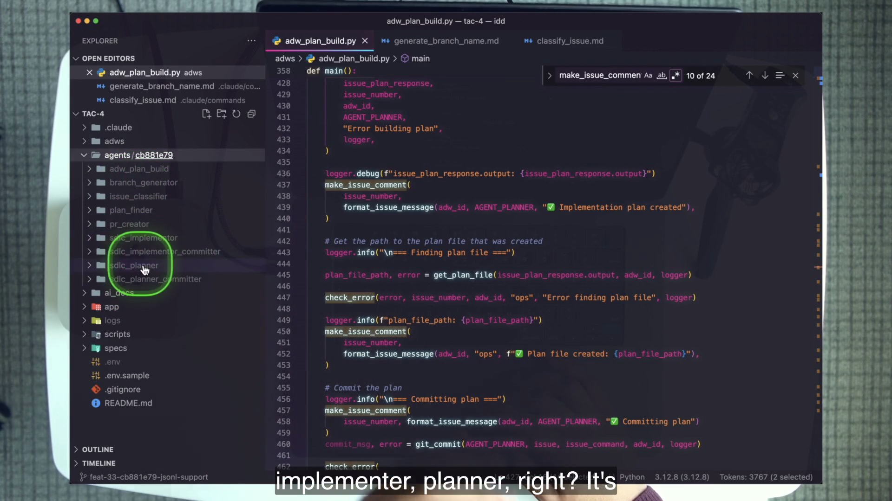
agents/cb881e79/ tree makes decomposition inspectable: classifier, branch generator, planner, plan finder, two committers, implementer, PR creator, and workflow log.The classifier receives issue data and returns one of three commands. The branch generator receives only what it needs to create a compliant branch. The planner receives the issue and the selected class template. The plan finder locates the new specification. A committer creates a message and commit. Only then does the implementer begin, with a fresh context window and the committed plan as its prompt. It does not need the planner’s internal conversation. It needs the concrete asset the planner produced.
That boundary is the key. An artifact crosses the step boundary; hidden reasoning does not. The system can inspect, diff, commit, and improve the artifact.
4 · Name it
The run uses eight agent invocations for the feature path: issue classifier, branch generator, planner, plan finder, planner committer, implementer, implementer committer, and PR creator. The ninth directory in the frame holds the parent workflow’s own logging.
5 · Worked example
| Step | Job | Context | Course policy |
|---|---|---|---|
| Classifier | Choose /chore, /bug, or /feature | Issue JSON + classification template | Fast/cheap is sufficient |
| Branch generator | Create one compliant branch | Issue metadata + branch contract | Fast/cheap |
| Planner | Explore repo and write the specification | Issue + class template + repository | Use a top model |
| Implementer | Build and validate the plan | Fresh window + committed plan + repository | Use a top model |
| Commit/PR glue | Produce bounded outputs | Git state + strict template | Fast/cheap |
Dan uses the sonnet alias throughout the on-camera run for speed, while explicitly recommending stronger models for plan and build. The policy matters more than the period model names.
6 · You try
adw_plan_build.py.7 · Common fail + fix
Micro-agents are not valuable merely because there are many of them. If three agents share an ambiguous job or must read one another’s hidden state, decomposition adds cost without isolation. Fix: give each agent one decision, a bounded input artifact, a strict output contract, and a reason its context should be fresh.
8 · Current practice
9 · Retrieval
List the eight micro-agent invocations in order.
Issue classifier → branch generator → planner → plan finder → planner committer → implementer → implementer committer → PR creator.
Where should the strongest models go?
Planning and implementation—the steps with the deepest repository reasoning and largest consequences.
10 · Teach-back
Explain why the implementer receives a plan file instead of inheriting the planner’s context. Include one benefit for testing, one for observability, and one for model selection.
TAC-1 introduced the agent as a function you can call. TAC-4 uses that call repeatedly, archives every prompt and stream, and threads each response into ordinary control flow.
1 · Hook
A terminal conversation is useful while you are present, but a webhook cannot click into your conversation and type the next slash command. The workflow needs a callable boundary: input text in, streamed events and a final result out, with an exit condition code can inspect.
2 · Picture
claude -p "<slash-command> <args>" \
--model <sonnet|opus> \
--output-format stream-json \
--verbose \
--dangerously-skip-permissions3 · Story
execute_template packages one micro-agent run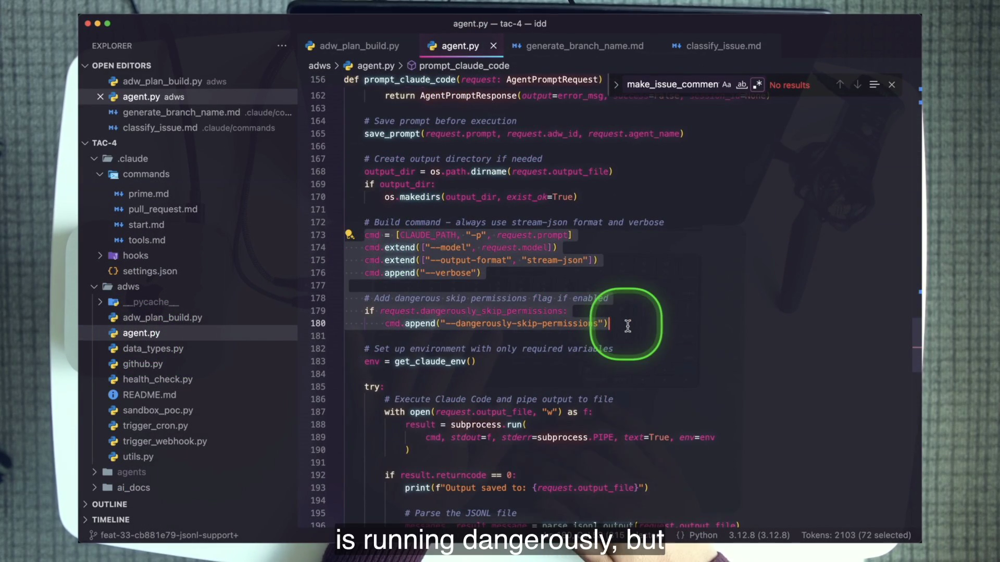
agent.py builds the command, writes the stream to disk, and parses the final result. The dangerous flag is visible because the environment must justify it.The wrapper composes a prompt from a slash command and its arguments. The referenced markdown template supplies the actual instructions through the CLI’s command mechanism. Before launch, the wrapper saves the exact prompt under agents/{adw_id}/{agent}/prompts/. It streams JSONL output to disk, produces a readable JSON representation, and parses the final result message for success, session ID, text, and run metadata. A minimal environment allowlist passes the API key, configured Claude path, ordinary process paths, and an optional GitHub token mapping.
The result is a function-like seam with durable evidence on both sides: exact request and exact event stream. The ADW can call it eight times without pretending the calls are deterministic.
4 · Name it
5 · Worked example
adw_plan_build.py creates an AgentTemplateRequest for /classify_issue.execute_template joins the slash command and issue data into a prompt.Notice the division: the model decides; code validates. The agent is a component, not the control plane.
6 · You try
adws/agent.py.execute_template and the lower-level prompt function it calls.7 · Common fail + fix
Symptom: --dangerously-skip-permissions runs on your daily-driver checkout with broad credentials because “the course does it.” Fix: create a disposable checkout or dedicated machine, pass only required environment values, keep production secrets absent, and make the pull request—not direct deployment—the output. If you cannot state what the process can destroy, the environment is not ready.
8 · Current practice
9 · Retrieval
What is the command shape used by the lesson?
claude -p "<command and args>" --model <model> --output-format stream-json --verbose --dangerously-skip-permissions.
Why is the dangerous flag considered acceptable here?
Only because the workflow is confined to a dedicated, disposable environment with bounded credentials. The environment is the permission boundary.
10 · Teach-back
Trace one request from Python object to saved prompt, subprocess, JSONL stream, parsed result, and deterministic validator. Do not use the phrase “it just runs Claude.”
Deterministic code cannot branch on an essay. Every glue agent ends with a narrow output contract, and the workflow validates the answer before it spends more time or money.
1 · Hook
Your classifier returns, “This appears to be a feature because it adds new upload behavior. I recommend using the feature workflow.” A person understands it. Code expecting /feature does not. If the script guesses, the next failure becomes ambiguous. If it silently continues with a default, the workflow may do the wrong class of work. Helpful prose is harmful at a machine boundary.
2 · Picture
3 · Story
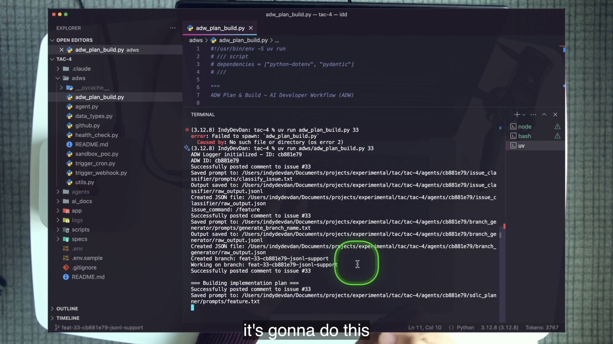
cb881e79, issue command /feature, branch feat-33-cb881e79-jsonl-support. Above it, Dan’s wrong-directory Failed to spawn remains visible.The issue classifier can think freely but must return only /chore, /bug, /feature, or 0. The branch generator must return only the branch name. The plan finder must return only a path or 0. The commit agent must return only the commit message it used. The PR creator must return only the URL. Each response becomes input to ordinary Python that checks shape, membership, or error status.
The wrong-path error in the frame teaches the same design ethic at another boundary: a command failed loudly before any work was performed. The repair is not to reinterpret the error. It is to use the actual course path, uv run adws/adw_plan_build.py <issue>.
4 · Name it
5 · Worked example
| Template | Allowed return | Consumer | Failure |
|---|---|---|---|
classify_issue.md | /chore, /bug, /feature, or 0 | Class switch in Python | Comment ❌ and exit |
generate_branch_name.md | Branch name only | Git step | Report and stop |
find_plan_file.md | specs/*.md path or 0 | Implementer request | Missing plan is fatal |
commit.md | Used commit message only | Status and evidence | Report and stop |
pull_request.md | PR URL only | Final issue update | Run remains incomplete |
The commit subject has an additional contract: <agent_name>: <issue_class>: <message>, present tense, with the message kept short. The contract belongs in the template because the agent performs the Git action; the validator belongs in code because the workflow owns control.
6 · You try
/docs.classify_issue.md and adws/data_types.py to compare the course pattern.7 · Common fail + fix
Symptom: the code searches a paragraph for the word “feature,” or defaults to chore when the classifier returns something unexpected. The run continues, but evidence is no longer trustworthy. Fix: reject values outside the contract, post the exact failure to the issue, and exit. A visible dead run is easier to repair than a plausible half-run.
8 · Current practice
9 · Retrieval
What are the classifier’s only legal outputs?
/chore, /bug, /feature, or 0.
What happens when a step’s contract breaks?
The workflow logs the problem, posts a ❌ status to the issue, and exits rather than guessing.
10 · Teach-back
Explain why an agent gets broad freedom inside a task but a narrow contract at the workflow boundary. Use classifier and plan-finder examples.
AFK without evidence is gambling. The lesson supplies four layers of observability and one compounding repair rule: when an artifact is wrong, improve the template or workflow that produced it.
1 · Hook
An agent opens a pull request. The diff looks reasonable, but you do not know which prompt it received, how many attempts occurred, which model ran, whether a plan existed, or where the branch name came from. The result may be correct, yet the system is not improvable. Success without traceability teaches you nothing; failure without traceability costs you hours.
2 · Picture
{adw_id}_{agent}: ✅/❌ issue comments show progress where the request lives.
agents/{adw_id}/ holds exact prompts, JSONL, readable output, and execution logs.
logs/{session_id}/ receives the five configured hook events.
specs/*.md records planner output and becomes the implementer’s input.
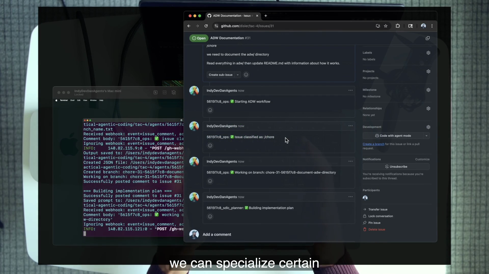
5615f7c8 through classification, branch creation, and planning. It is a status surface, not the full debugging record.3 · Story
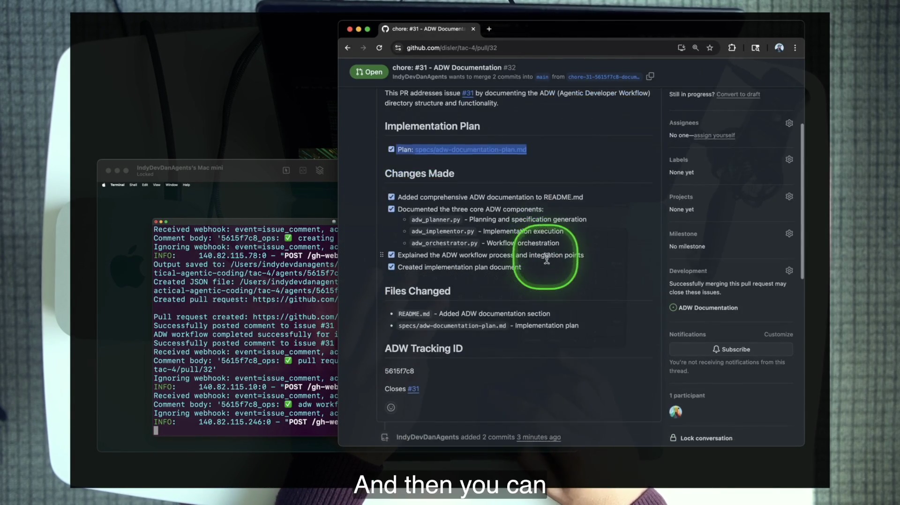
The instinct is to edit the PR description and move on. Dan rejects that instinct. A hand edit repairs one artifact. The next documentation chore will use the same prompt and can repeat the same mistake. The durable repair belongs in the owning template: define ADW as “AI Developer Workflow,” require file claims to be checked against the repository, and improve the PR template if its report invites speculation.
The repository contains a second honest exhibit. Its agent-written adws/README.md points model selection to “agent.py line 129,” although the real choices are represented in type literals and per-step requests. Its commit-format section conflicts with commit.md. Review is not a ceremony after autonomy; it is the input to system improvement.
4 · Name it
5 · Worked example
5615f7c8 to find the PR creator’s prompt and output.pull_request.md.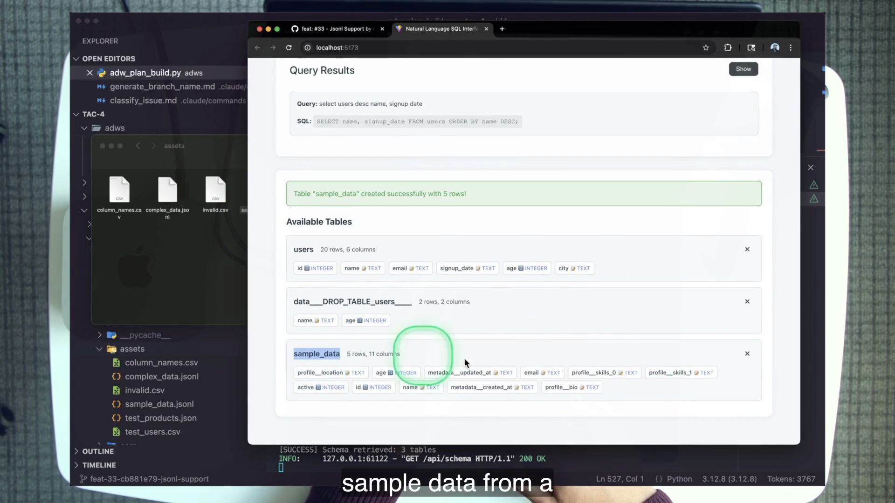
__ and _0 column conventions from the original issue.6 · You try
agents/{id}/ directory.You pass only when you can move from symptom to owning system component without guessing.
7 · Common fail + fix
Symptom: you refresh the live feed, celebrate green check marks, and never open the saved prompts or raw output. When a result is wrong, you hand-edit it. Fix: treat every run as an experiment. Preserve input, inspect the artifact chain, change one owning system component, rerun, and compare.
8 · Current practice
9 · Retrieval
What are the four observability layers?
Issue-comment live feed; agents/{adw_id}/ prompts and outputs; logs/{session_id}/ hook logs; committed plan file.
What does “fix the system, not the issue” require?
Trace a bad output to its owning template, contract, workflow step, or environment condition; improve that source; rerun and compare instead of hand-patching the artifact.
10 · Teach-back
Use PR #32 to explain symptom → trace → owning template → rerun → comparison. Your listener should be able to name the one-off fix you deliberately refused.
The lesson’s urgency is paired with operational humility. Validate the environment before every run, start with work the agent should remove “with no debate,” and climb only as evidence earns trust.
1 · Hook
You launch a substantial feature to “really test” the system. It fails to comment on the issue because the remote still points at the course repository. You fix that, rerun, and the subprocess cannot locate Claude. You fix that, rerun, and discover GitHub CLI is unauthenticated. After three attempts, you blame the agent’s reasoning even though it never reached the planning step. Infrastructure noise destroyed the learning signal.
2 · Picture
Clear artifacts, low ambiguity, cheap review. Prove the perimeter and trace.
Known failure and expected correction. Add reproducible evidence.
Larger planning and implementation surface. Require constraints, tests, and mature review.
3 · Story
The install command removes the course remote, initializes the working repository, copies environment samples, installs dependencies, and reports the actions it cannot complete for you. You must create and push to a repository you own because the ADW needs to create your issues, branches, comments, and pull requests. The health check then warns if the remote still points at disler, verifies GitHub CLI installation and authentication, checks required paths and environment values, and performs a live 2+2 Claude round-trip expecting 4.
Only after that does the course run the two-line documentation chore. The chore is not a toy to skip. It is the cheap rehearsal that proves every PITER element and every ADW stage before the feature spends eight agent invocations.
4 · Name it
5 · Worked example
CLAUDE_CODE_PATH are available to the subprocess.gh exists and is authenticated for issue comments and pull requests.4.“HEALTHY” does not prove the feature will succeed. It proves that a reasoning failure will not be confounded with the most common configuration failures.
6 · You try
.env.sample, adws/health_check.py, and your Git remote.uv run adws/health_check.py <issue>.disler warning is absent, and the issue has a ✅ comment.7 · Common fail + fix
The chore took roughly five minutes and the feature roughly seventeen in the recording. Different machines, models, network conditions, and run behavior will vary. Fix: budget by invocation count and evidence, not the stopwatch. Record duration, turns, and cost from your result lines. Improve the slow or expensive step instead of declaring the system broken.
8 · Current practice
9 · Retrieval
What does the course health check verify?
Environment variables and Claude path, Git remote, GitHub CLI installation/authentication, a live Claude Code round-trip, and optionally the issue-comment path.
What is the adoption ladder?
Chores → bugs → features.
10 · Teach-back
Teach why a health check is not merely setup documentation. Your answer must connect repeatability, error attribution, issue-visible evidence, and the trust ladder.
The course captures a durable system with period-specific wrappers. Use the distinction below to modernize without erasing what the lesson teaches.
What the code and video actually demonstrate
claude -p subprocesses.--dangerously-skip-permissions inside a dedicated environment.sonnet aliases and a pinned health-check model ID.What to carry forward
These are concept overlays, not prerequisites and not substitutes for the course codebase.
Use after the agentic-layer section to reinforce how repository folders encode operational context.
Watch on YouTube → Where this goesCodebase SingularityUse as the forward-looking vision once templates, ADWs, PITER, and review are concrete.
Watch on YouTube →Run only in the TAC-4 course codebase pushed to a repository you own. You type zero lines of application code by hand. The agent builds the feature; you build, trace, and improve the system.
https://github.com/disler/tac-4.git into a fresh directory and enter it..claude/commands/install.md before running /install. Say what it will do: remove the course remote, initialize Git, copy environment samples, install frontend and backend dependencies, and attempt the TAC-2 environment copy.origin and push main..env with ANTHROPIC_API_KEY and CLAUDE_CODE_PATH. Use which claude when the subprocess cannot find the CLI. Fill app/server/.env for the application provider..claude/settings.json. Record the interactive Bash allowlist, the three denied command patterns (two force-push forms and rm -rf), the five hook events, and the logs/{session_id}/ destination.execute_template enables dangerous-skip, so environment isolation is the boundary.uv run adws/health_check.py <number>.Do not proceed until status is HEALTHY, the disler remote warning is absent, the live test returns 4, and a ✅ health comment appears on your issue.
ADW Documentation. Use the course shape: /chore followed by a request to read the ADW directory and update its README with how it works.uv run adws/adw_plan_build.py <A>. If you run uv run adw_plan_build.py from the root and see Failed to spawn, correct the path rather than debugging the workflow.<class>-<issue>-<adw-id>-<slug>, a new specs/*-plan.md, two commits matching <agent>: <class>: <message>, and a PR containing plan link, changes checklist, Closes #A, and the tracking ID.Submit the audit and trace the same ADW ID through issue comments → branch → agents/{id}/ → commits → pull request.
sh scripts/start.sh. At localhost:5173, confirm that the shipped app accepts only CSV and JSON. The server rejects other extensions; JSONL support does not exist on main.Jsonl Support. Require a full-file field scan, standard library only, one table per file, nested keys and lists joined with centrally configurable __, list indexes such as _0, interface copy, and multiple test fixtures.HEALTHY.uv run adws/adw_plan_build.py <B>.agents/<id>/adw_plan_build/execution.log. After each agent completes, inspect its saved prompt and result. Record num_turns, duration_ms, and total_cost_usd.cd app/server && uv run pytest, start the app, regression-test an old query, upload an agent-created JSONL fixture, and confirm the table uses __ and _0.Provide green tests, live behavior evidence, and one sentence answering: after clicking Create on the issue, what did you contribute? Target: prompt input and review—nothing else.
uv run adws/trigger_cron.py. Comment exactly adw on issue A and observe reprocessing within roughly twenty seconds. State the two qualifying conditions: a new issue with no comments, or a latest comment exactly equal to adw.uv run adws/trigger_webhook.py on port 8001; expose it with scripts/expose_webhook.sh (requires CLOUDFLARED_TUNNEL_TOKEN) or ngrok; configure GitHub Issues and Issue-comment events; create a tiny chore from your phone. If infrastructure blocks you, document the attempted configuration and exact failure.GET /health and connect its summary to the standalone health check.scripts/kill_trigger_webhook.sh and scripts/stop_apps.sh. Explain why a forgotten listener is a cost bug.scripts/clear_issue_comments.sh <issue> and scripts/delete_pr.sh <pr> [--delete-branch].Explain which PITER element changed across manual, cron, and webhook triggers, and which three roles stayed conceptually stable.
/docs or /test as a new template, extend the command Literals in adws/data_types.py, and update classification. Prove an issue runs end to end.tac/tac-4, then list three additional course-repo chores the existing templates could accept. Circle the safest next issue, but keep every action inside this course repository.__/_0 verification.Recognition is not enough. Answer cold, then use every miss to select a lab checkpoint or source file to revisit.
1. Expand PITER and map each element to the first demo.
Prompt input—GitHub issue #31; Trigger—GitHub webhook; Environment—dedicated Mac mini; Review—issue feed, committed artifacts, and PR #32.
2. What moves out of the loop, and what human work remains?
The execution transitions move out: classify, branch, plan, implement, commit, and create PR. The human still supplies the request and constraints, reviews evidence, and improves the system.
3. Why can the manual and webhook demos use the same ADW?
The trigger and environment are swappable PITER roles; the workflow, prompt-input shape, and review surface remain stable.
4. Which work remains in-loop?
Experimentation, new territory, and very hard specific problems.
5. Define an ADW and list its five stages.
Reusable workflow combining code, prompts, and agents to deliver results autonomously; fetch issue → branch → plan and commit → implement and commit → pull request.
6. List the eight feature-run agent invocations.
Classifier, branch generator, planner, plan finder, planner committer, implementer, implementer committer, PR creator.
7. Why is the committed plan a better boundary than planner conversation history?
It is concrete, reviewable, diffable, committable, improvable, and lets the implementer start with a fresh context window.
8. What is the classifier contract and failure policy?
Only /chore, /bug, /feature, or 0; illegal output is logged, reported with ❌, and stops the run.
9. Why is dangerous-skip safe here, and what would make it unsafe?
It is acceptable only in a dedicated, disposable environment with bounded credentials. A daily-driver checkout, production secrets, or broad filesystem access breaks the argument.
10. Name the four observability layers.
Issue live feed; per-agent prompts and outputs; hook session logs; committed plan.
11. What does the health check prove—and not prove?
It proves the environment, remote, GitHub CLI, Claude round-trip, and comment path are ready. It does not prove a particular plan or implementation will be correct.
12. Why must the lab serialize runs?
The course workflow changes branches in one checkout. Concurrent triggers can collide without a queue, lock, worktree, or container per run.
13. A PR uses the wrong expansion of ADW. What do you do?
Trace the claim to the owning prompt or report, encode the canonical definition, rerun the same issue, and compare. Do not merely edit the PR.
14. Why does “own the pipeline” survive using a hosted agent?
Hosting can be rented while repository-specific templates, workflow semantics, contracts, standards, and review policy remain yours.
15. Which model policy is durable after course-era names change?
Use the cheapest model that reliably clears each step; reserve the strongest models for planning and implementation.
16. What is the adoption ladder, and why?
Chores → bugs → features. It builds trust and improves templates with low-cost, reviewable work before larger autonomous changes.
Without notes, teach the complete system in seven minutes:
Expert pass: your listener can predict why two simultaneous webhook events are unsafe in the course checkout and propose the missing isolation without changing the meaning of PITER.
Use the course’s canonical terms. These definitions are narrow enough to test against the repository and demos.
.claude/commands/ and workflows in adws/, plus supporting artifacts, wrapped around an app that does not depend on them.-p and structured stream output so an agent becomes a component in ordinary code.{adw_id}_{agent}: ✅/❌ message, providing user-visible progress.specs/*.md file that records planner output and becomes the implementer’s entire task input.